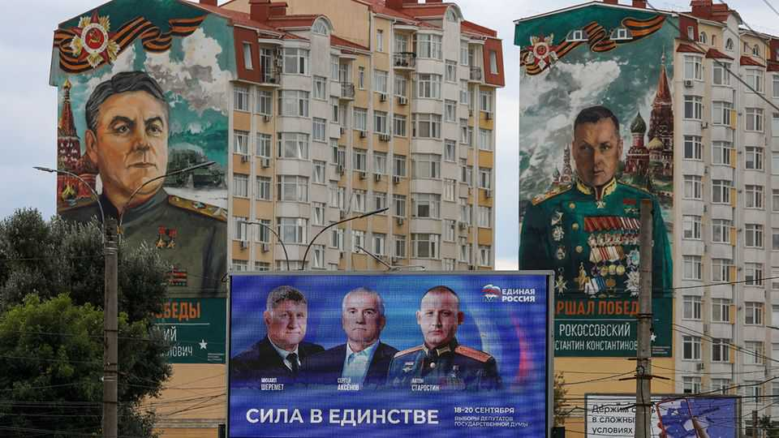

Russia’s sham election is descending into farce
The parliamentary vote may be followed by a bigger mobilisation for war

Sep 17th 2026
“GOOD AFTERNOON, dear voters,” says Alexey Chernov, a portly 44-year-old in a plaid flannel shirt. He nervously rattles off his electoral pitch: a few sentences about supporting large families. It takes 28 seconds. “That’s all?” asks the host in the television studio, reminding him that the rules allow him to speak for a minute. “Perhaps something else will come to mind?” “No, nothing else will come,” he says. The remaining seconds are filled with the ticking of a clock.
Such were the televised debates between candidates for the Duma, Russia’s parliament, that aired this month on the country’s Channel One. Voting starts on September 18th and lasts three days. Mr Chernov, a paramedic with an interest in live-action roleplay involving orcs, is running for the previously unknown Party of Direct Democracy. In another debate, a candidate filled his entire time slot by singing a Soviet-era song. He represents the Communist Party of Russia, another spoiler party. Its name is clearly designed to create confusion with the Communist Party of the Russian Federation, the second-largest group in the Duma, which occasionally displays some slight independence from the Kremlin.
Russians are calling this year’s Duma ballot a “special electoral operation”, by analogy to the “special military operation” that is the government-mandated term for the war against Ukraine. The Kremlin has been steadily turning Russia’s democratic institutions into simulacra since the early 2000s. It aims to discourage any dissenting voters from turning out, while coercing public-sector workers, who can be pressured into voting, to plump for Vladimir Putin’s United Russia party. But this year the exercise has reached an absurd new low.
In previous elections the Kremlin maintained a semblance of pluralism by allowing a few opposition candidates to run, and occasionally win. If necessary, the result could be tweaked with some rigging. Elites consented to the charade because they benefited from the status quo; the broader population saw it as a sign of stability.
That sense of calm is long gone, and the tacit consent is crumbling. The war against Ukraine is in its fifth year. Bodies are piling up, and smoke is billowing from bombed oil refineries across Russia. A recent survey by Levada, an independent pollster, found that some 70% of respondents consider the political situation tense or critical. Fuel shortages are only the most immediate effect. More important is the absence of any prospect of peace or a better future.
The purpose of elections in a dictatorship, observes Ekaterina Schulmann of the Carnegie Russia Eurasia Centre in Berlin, is not to find out what citizens want but to test that the system is working and able to enforce the dictator’s will. The role of voters is to demonstrate loyalty. But this time the population shows little interest in playing along. At the start of the summer two-thirds of Russians did not know the elections were happening, Levada found. In focus groups conducted by Elena Panfilova, a political scientist, the standard responses were “What elections? For what? Can’t they see what’s going on in the country?” Asked what event they expected in September, many replied: “Mobilisation?”
On billboards for United Russia, the candidates are largely stone-faced veterans in full military uniforms. Mikhail Komin, who studies elites, expects 50 veterans to end up in the Duma. Meanwhile Russia’s non-military elites, who recognise the catastrophic consequences of the war, have grown increasingly alienated by Mr Putin’s decisions. That is “a completely new situation for Putin,” says a former senior official.

The tension has led to a shift in management. In previous elections the job of ensuring commanding majorities was left to bureaucrats and officials known as “political technologists”. This time the FSB, the state security service, has become the principal political actor, selecting and removing candidates. Rather than propaganda, they favour blunter instruments: bans, intimidation and arrests.
Yabloko, Russia’s oldest liberal party, was barred after its open anti-war stance led to a dramatic rise in polls. On August 17th Lev Shlosberg, one of its most popular leaders, was sentenced to 11 years in a penal colony. In June Maksim Kruglov, the party’s deputy chair, had been sentenced to seven years in jail. Several others have been arrested. Its candidates are being banned for displaying “extremist” symbols such as a photograph with Alexei Navalny. In Chelyabinsk a candidate was disqualified for quoting Andrei Gromyko, a Soviet foreign minister: “Better ten years of negotiations than one day of war.”
But it is not just liberals. The FSB is removing anyone who could suddenly gain popularity, regardless of party affiliation. When Nikolai Bondarenko, a Communist candidate with 2m followers on YouTube, criticised the government’s internet restrictions in a televised debate, he was promptly detained on trumped-up charges. Those who dare to run in this election, with FSB approval, are conscious that winning can be more dangerous than losing. In Ryazan, a city 185km south-east of Moscow, none of the candidates turned up for television debates at all.
Educated and politically conscious Russians who voted in the past no longer see much point in the charade. But some who previously considered themselves apolitical are planning to vote, not because they think it will make a difference but as a safe way to vent frustration. Dmitry, a 35-year-old Muscovite who has never voted, says he will “go to these elections and write what I think of them on the ballot paper”.
“We are not political activists; we are just incredibly fed up,” says Nadezhda, a 25-year-old in Rostov, a region bordering Ukraine. Ukraine’s deep strikes are starting to bring such attitudes far deeper into the country. “That people in power are gangsters has long been clear, but the fact that they are also impotent, unable to shoot down a small buzzing drone, is a revelation,” says Evgeny, a 48-year-old programmer from Ekaterinburg, a city in the Urals. He is planning to spoil his ballot paper.
Surveys by ExtremeScan, another independent pollster, show that United Russia will struggle to get more than 25% of the vote, 20 points below its target. The Kremlin will no doubt reach its desired result through methods such as forcing public-sector workers to cast easily altered electronic ballots, and adding dubious votes from occupied territories. For many Russians, says Ms Panfilova, the elections are just “a date on the calendar—after which they fear, and expect, either mobilisation or some other kind of madness.”■